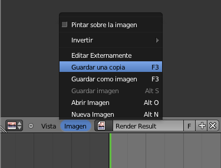

Sólo sombra
Recordatorio
En muchas ocasiones lo que queremos es una imagen con fondo transparente y
para eso activamos en el panel de Render  (botonera Salida) la opción
RGBA. La imagen del render será en un formato que admita canal
alfa y capaz de almacenar la información relativa a la
transparencia. PNG es la opción ideal en estos casos.
(botonera Salida) la opción
RGBA. La imagen del render será en un formato que admita canal
alfa y capaz de almacenar la información relativa a la
transparencia. PNG es la opción ideal en estos casos.
Con esto garantizamos que en la imagen resultante del render salen transparentes todas aquellas zonas en las que se ve en cielo.
A la propiedad explicada anteriormente le hacemos un bonito añadido que le da tridimensionalidad y elegancia a nuestros diseños.
¿Qué ocurre si queremos que el objeto representado tenga una sombra arrojada sobre un supuesto suelo? Si añadimos el plano, la sombra aparecerá en el render pero también lo hará el propio plano. ¿Que debemos hacer? Muy fácil:
- Seleccionamos el plano que hace de suelo.
- Le decimos a Blender que en el Material
 del plano sólo renderice la sombra. Basta con activar la opción Solo sombras de la botonera Sombra.
del plano sólo renderice la sombra. Basta con activar la opción Solo sombras de la botonera Sombra.

Ahora tras el render, si hemos activado la mencionada opción RGBA, al guardar la imagen...
Obtenemos una imagen con fondo transparente y con sombra arrojada.
En nuestro ejemplo partimos de una escena con una mesa y una silla escolar iluminadas con tres puntos de luz de los cuales sólo una produce sombra. Tras editar el plano según los descrito, este es el render visto en el propio Blender.
Muestra este aspecto, una vez guardado, en un visor de imágenes (o en un editor como Gimp) que represente la transparencia con el típico ajedrezado.
Ahora esta imagen se integra perfectamente en composiciones de fondos no homogéneos, adaptándose a cualquier circunstancia.
Consejo
Evitaremos la Oclusión ambiental porque se genera una sombra muy extensa alrededor de la base de los objetos que se saldrá del encuadre del render aunque a primera vista no se aprecie. Después, al usar la imagen para otros fines, se notaría el corte y estéticamente no es apropiado.